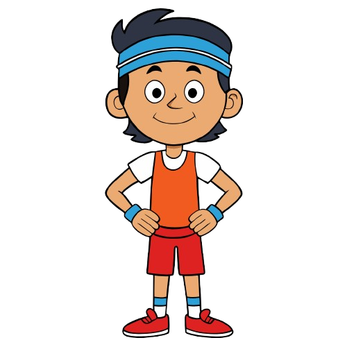

Let's have a small quiz...

What is clean sport?
A) Sport that permits any substance for better performance.
B) Sport that bans prohibited substances, ensuring fairness and integrity.
C) Sport exclusive to amateur athletes.
D) Sport centered only on fitness without rules.
CHECK